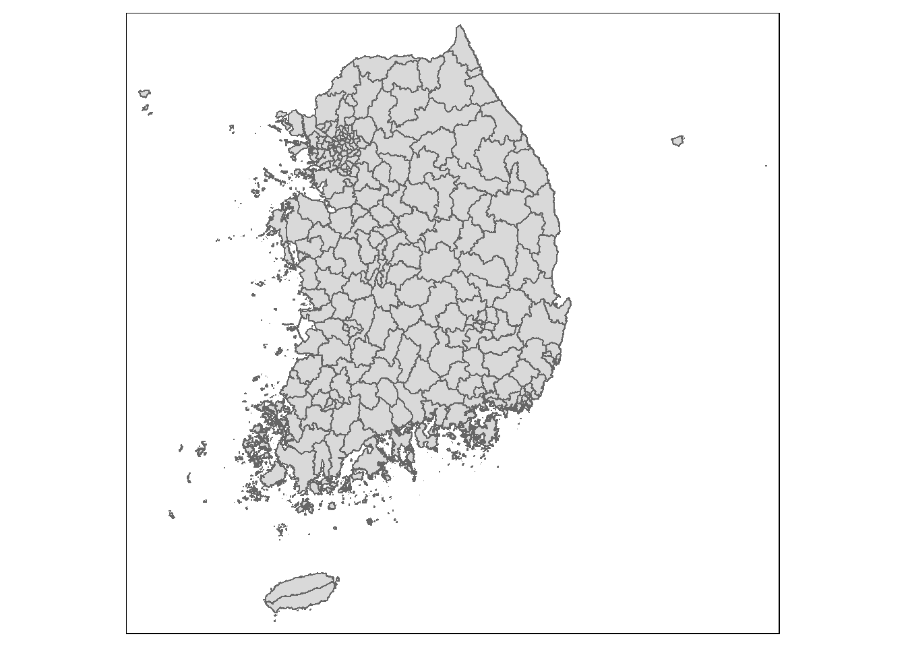
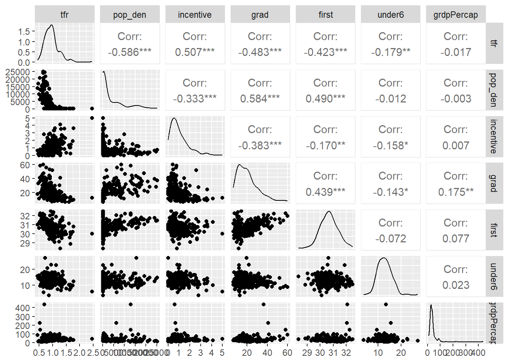
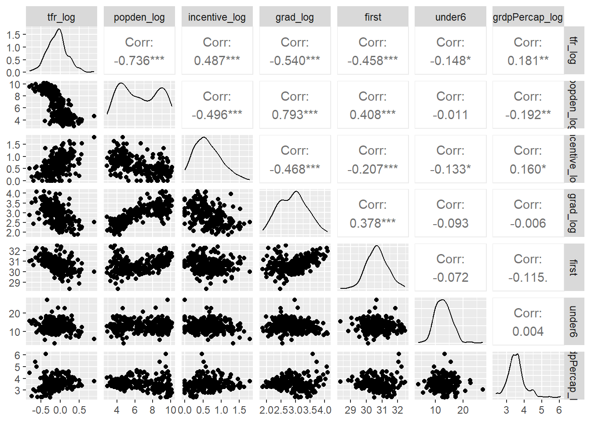
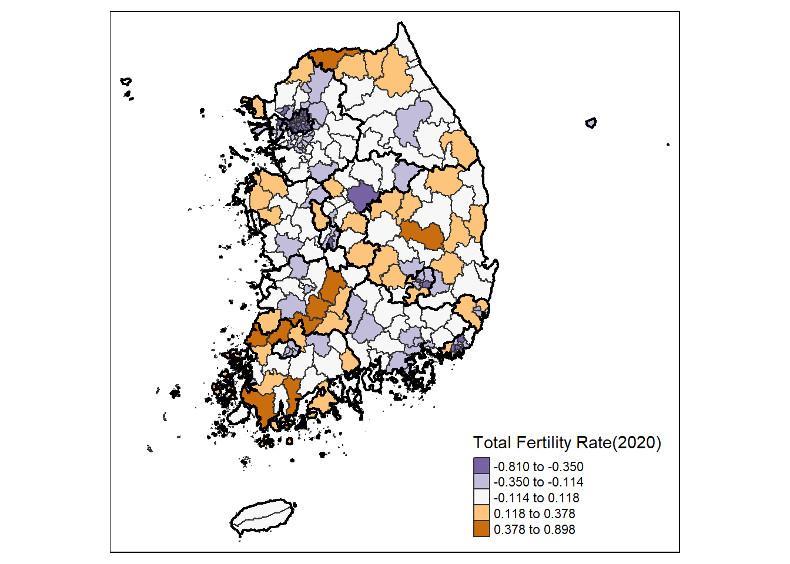
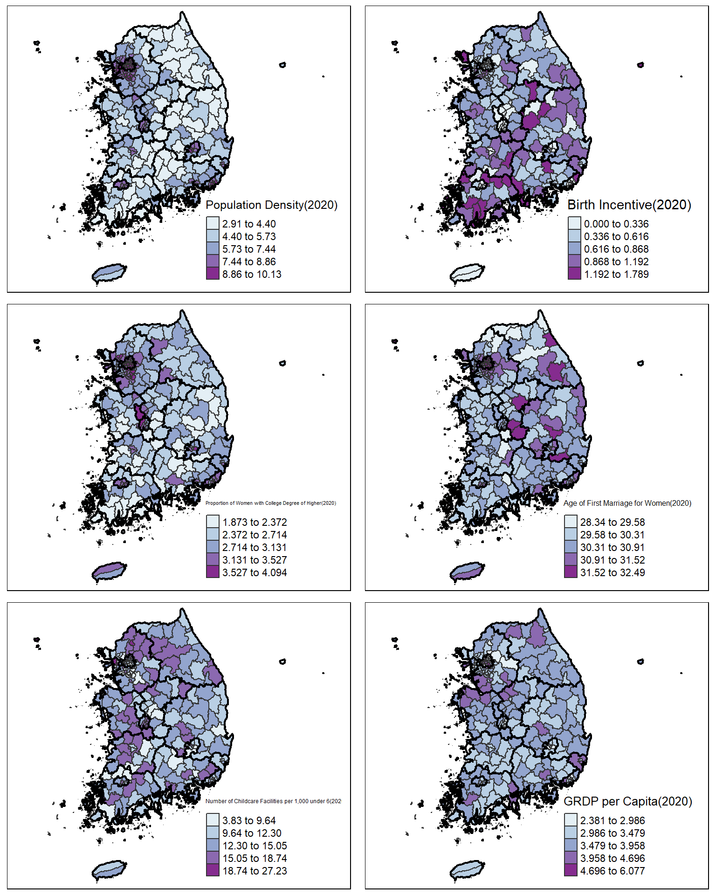

My first semester as a graduate student has finally ended This semester, I took a Spatial Data Mining class and wrote a term paper using GWR(Geographically Weighted Regression) and GRF(Geographic Random Forests). I want to share what I did with this blog post.
My goal was to see if there is spatial non-stationarity in the regional total fertility rate in South Korea. I set the Sigungu level as the study scale. Sigungu is the second-largest administrative region in South Korea.
What is spatial non-stationarity?
Spatial non-stationarity means that the relationship between variables is spatially varying.
A dependent variable is the Total fertility rate. I used the following variables as independent variables:
Population density(pop_den)
Average birth incentive per capita(incentive)
The proportion of women with college degrees or higher(grad)
The age of first marriage for women(first)
The number of childcare facilities per 1,000 children under 6(under6)
Gross regional domestic product per capita(grdpPercap)
all the variables are based on data from the year 2020.
Global analysis
Correlation analysis
Before analyzing the variables locally, I conducted some global analysis.
library(readxl)
TFR <- read_excel("TFR2020.xlsx")
str(TFR)tibble [251 × 9] (S3: tbl_df/tbl/data.frame)
$ sgg : num [1:251] 0 11010 11020 11030 11040 ...
$ name : chr [1:251] "전국" "종로구" "중구" "용산구" ...
$ tfr : num [1:251] 0.837 0.522 0.688 0.634 0.783 0.527 0.699 0.66 0.676 0.55 ...
$ pop_den : num [1:251] 516 6306 12887 10318 17358 ...
$ incentive : num [1:251] 1.01 0.677 0.605 0.532 0.374 ...
$ grad : num [1:251] 20.6 41.1 36.3 46.4 40 ...
$ first : num [1:251] 30.7 32 32.1 32.2 31.6 ...
$ under6 : num [1:251] 12.7 15.6 13.4 11 11.9 ...
$ grdpPercap: num [1:251] 41.1 224 435.5 56.8 42.6 ...summary(TFR) sgg name tfr pop_den
Min. : 0 Length:251 Min. :0.4450 Min. : 18.37
1st Qu.:24035 Class :character 1st Qu.:0.7845 1st Qu.: 103.45
Median :32310 Mode :character Median :0.9240 Median : 624.14
Mean :29749 Mean :0.9548 Mean : 3850.92
3rd Qu.:36325 3rd Qu.:1.0645 3rd Qu.: 5884.99
Max. :39020 Max. :2.4550 Max. :25143.33
incentive grad first under6
Min. :0.0000 Min. : 6.51 Min. :28.34 Min. : 3.831
1st Qu.:0.4314 1st Qu.:12.51 1st Qu.:30.21 1st Qu.:10.662
Median :0.7860 Median :18.76 Median :30.66 Median :12.702
Mean :1.0105 Mean :20.61 Mean :30.68 Mean :12.899
3rd Qu.:1.3544 3rd Qu.:25.34 3rd Qu.:31.09 3rd Qu.:14.767
Max. :4.9820 Max. :59.96 Max. :32.49 Max. :27.231
grdpPercap
Min. : 10.82
1st Qu.: 26.04
Median : 32.87
Mean : 39.34
3rd Qu.: 41.70
Max. :435.52 library(GGally)
TFR |>
select(tfr, pop_den, incentive, grad, first, under6, grdpPercap) |>
ggpairs()
I found that some variables have skewed distributions, so I decided to apply log transformation to those variables.
TFR_log <- TFR |>
mutate(
tfr_log = log(tfr),
popden_log = log(pop_den),
incentive_log = log(incentive + 1),
grad_log = log(grad),
grdpPercap_log = log(grdpPercap)
) |>
select(-c(tfr, grad, grdpPercap, pop_den, incentive))
TFR_log |>
select(-c(sgg, name)) |>
relocate(tfr_log, popden_log, incentive_log, grad_log, first, under6, grdpPercap_log) |>
ggpairs()
Now the distributions look much better than before. In this correlation matrix, I found that there are some significant correlations between independent variables. This is called multicollinearity, and in the regression analysis, it negatively affect the results. Researchers usually address this issue by removing some variables or conducting dimension reduction techniques such as Principle Component Analysis (PCA). However, in my case, “global correlations” between independent variables do not necessarily imply “local correlations”. Therefore, I decided to use all the variables as they are.
Regression Analysis
I also conducted an Ordinary Least Squares Regression (OLS) to examine the relationship between dependent and independent variables.
TFR_log_sgg <- TFR_log[-1, ] # first row contains the value of the whole country.
model_log <- lm(tfr_log ~
popden_log + incentive_log + grad_log + first + under6 + grdpPercap_log,
data = TFR_log_sgg)
summary(model_log)
Call:
lm(formula = tfr_log ~ popden_log + incentive_log + grad_log +
first + under6 + grdpPercap_log, data = TFR_log_sgg)
Residuals:
Min 1Q Median 3Q Max
-0.43705 -0.10125 0.00607 0.09694 0.58561
Coefficients:
Estimate Std. Error t value Pr(>|t|)
(Intercept) 2.7979081 0.5178115 5.403 0.000000156 ***
popden_log -0.0847490 0.0085770 -9.881 < 0.0000000000000002 ***
incentive_log 0.1072175 0.0333750 3.213 0.00149 **
grad_log 0.0805996 0.0374403 2.153 0.03232 *
first -0.0806301 0.0168346 -4.790 0.000002909 ***
under6 -0.0116743 0.0034761 -3.358 0.00091 ***
grdpPercap_log 0.0005006 0.0221743 0.023 0.98201
---
Signif. codes: 0 '***' 0.001 '**' 0.01 '*' 0.05 '.' 0.1 ' ' 1
Residual standard error: 0.162 on 243 degrees of freedom
Multiple R-squared: 0.6221, Adjusted R-squared: 0.6128
F-statistic: 66.68 on 6 and 243 DF, p-value: < 0.00000000000000022Three variables (popden_log, first, under6) showed the most significance, followed by incentive_log and grad_log. grdpPercap_log showed no significance. The coefficient of determination (\(R^2\)) was 0.6221, and the adjusted \(R^2\) was 0.6128. I considered this model sufficient to explain the relationship.
Using the result of the regression analysis, I evaluated the model’s performance with Root Mean Square Error (RMSE) and Mean Absolute Error (MAE).
obs_val <- TFR_log_sgg$tfr_log
pred_val_OLS <- model_log$fitted.values
res_OLS <- obs_val - pred_val_OLS
rmse_OLS <- sqrt(mean(res_OLS^2))
rmse_OLS[1] 0.1597133mae_OLS <- mean(abs(res_OLS))
mae_OLS[1] 0.1243839Spatial visualization
Before moving on to the local analysis, I wanted to see the distribution of the variables. So, I created choropleth maps for all the variables. To make a map, I joined table data containing the variables with the spatial data.
library(sf)
sgg <- st_read("bnd_sigungu_00_2020_2020_4Q.shp", quiet = TRUE)
summary(sgg) BASE_DATE SIGUNGU_CD SIGUNGU_NM pop
Length:250 Length:250 Length:250 Min. : 8444
Class :character Class :character Class :character 1st Qu.: 57312
Mode :character Mode :character Mode :character Median :174506
Mean :207317
3rd Qu.:314999
Max. :880859
pop_den geometry
Min. : 18.37 MULTIPOLYGON :250
1st Qu.: 103.13 epsg:NA : 0
Median : 625.48 +proj=tmer...: 0
Mean : 3864.26
3rd Qu.: 5929.76
Max. :25143.33 sgg$SIGUNGU_CD <- as.integer(sgg$SIGUNGU_CD) # convert "SIGUNGU_CD" in "sgg" as integer
sgg_TFR <- sgg |> # join table data with spatial data
left_join(TFR_log, join_by(SIGUNGU_CD == sgg)) |>
select(-c(pop, pop_den))
summary(sgg_TFR) BASE_DATE SIGUNGU_CD SIGUNGU_NM name
Length:250 Min. :11010 Length:250 Length:250
Class :character 1st Qu.:24043 Class :character Class :character
Mode :character Median :32315 Mode :character Mode :character
Mean :29868
3rd Qu.:36328
Max. :39020
first under6 tfr_log popden_log
Min. :28.34 Min. : 3.831 Min. :-0.80968 Min. : 2.911
1st Qu.:30.21 1st Qu.:10.660 1st Qu.:-0.24303 1st Qu.: 4.636
Median :30.66 Median :12.673 Median :-0.07850 Median : 6.439
Mean :30.68 Mean :12.900 Mean :-0.08017 Mean : 6.574
3rd Qu.:31.09 3rd Qu.:14.771 3rd Qu.: 0.06321 3rd Qu.: 8.688
Max. :32.49 Max. :27.231 Max. : 0.89813 Max. :10.132
incentive_log grad_log grdpPercap_log geometry
Min. :0.0000 Min. :1.873 Min. :2.381 MULTIPOLYGON :250
1st Qu.:0.3586 1st Qu.:2.524 1st Qu.:3.258 epsg:NA : 0
Median :0.5798 Median :2.930 Median :3.493 +proj=tmer...: 0
Mean :0.6271 Mean :2.910 Mean :3.523
3rd Qu.:0.8566 3rd Qu.:3.233 3rd Qu.:3.732
Max. :1.7888 Max. :4.094 Max. :6.077 I used “sido” data for better visualization.
library(tmap)
sido.shp <- st_read("SIDO_2021_gen.shp", quiet = TRUE) # sido is the largest administrative region in South Korea
tm_shape(sgg_TFR) +
tm_polygons("tfr_log", style = "jenks", palette = "-PuOr", border.col = "gray20", lwd = 1,
title = "Total Fertility Rate(2020)",
midpoint = 0
)+
tm_shape(sido.shp) +
tm_borders(col = "black", lwd = 2)
I also made maps for the independent variables using a self-made function.
var_mapping <- function(value, title) {
tm_shape(sgg_TFR) +
tm_polygons(value, style = "jenks", palette = "BuPu", border.col = "gray20", lwd = 1,
title = title) +
tm_shape(sido.shp) +
tm_borders(col = "black", lwd =2)
}map1 <- var_mapping("popden_log", "Population Density(2020)")
map2 <- var_mapping("incentive_log", "Birth Incentive(2020)")
map3 <- var_mapping("grad_log", "Proportion of Women with College Degree of Higher(2020)")
map4 <- var_mapping("first", "Age of First Marriage for Women(2020)")
map5 <- var_mapping("under6", "Number of Childcare Facilities per 1,000 under 6(2020)")
map6 <- var_mapping("grdpPercap_log", "GRDP per Capita(2020)")
tmap_arrange(map1, map2, map3, map4, map5, map6, ncol = 2, nrow = 3)
GWR and GRF will be introduced in the following posts.
Citation
BibTeX citation:
@online{kim2024,
author = {Kim, Woohyung},
title = {Exploratory {Spatial} {Analysis} of {Regional} {Total}
{Fertility} {Rates} in {South} {Korea:} {Part} 1},
date = {2024-07-03},
url = {https://geowhk.github.io/posts/2024-07-03-first-blog/},
langid = {en}
}
For attribution, please cite this work as:
Kim, Woohyung. 2024. “Exploratory Spatial Analysis of Regional
Total Fertility Rates in South Korea: Part 1.” July 3, 2024. https://geowhk.github.io/posts/2024-07-03-first-blog/.